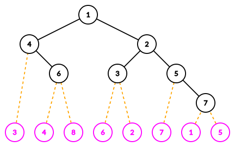

有一个 $1 \sim n$ 的排列 $P_1, P_2, \cdots, P_n$，其中相邻两个数 $P_i, P_{i+1}$ 间写有一个整数 $W_i$，记作 $P_i \xrightarrow {W_i} P_{i+1}$。
为了方便起见，额外定义 $W_0 = W_n = 0$，分别在 $P_1$ 的左边和 $P_n$ 的右边。
定义一个区间 $\left[ L, R \right]$ ($1 \leq L \leq R \leq n$) 是好的，如果对于 $\forall i \in \left\{ L, L + 1, \cdots, R - 1 \right\}$，满足 $W_{L - 1} < W_i \wedge W_R < W_i$。
对于一个好的区间 $\left[ L, R \right]$，定义 $M \left( L, R \right)$ 为 $W_L, W_{L + 1}, \cdots, W_{R - 1}$ 中最小元素的下标。
你现在可以进行若干次如下操作：
选择一个好的区间 $\left[ L, R \right]$，记 $M = M \left( L, R \right)$，然后交换 $\left[ L, M \right]$ 和 $\left[ M + 1, R \right]$。更精细地，设原来的数列长这样：$$ \cdots \xrightarrow {W_{L-1}} \color {red} {P_L \xrightarrow {W_L} \cdots \xrightarrow {W_{M-1}} P_M} \xrightarrow {W_M} \color {blue} {P_{M+1} \xrightarrow {W_{M+1}} \cdots \xrightarrow {W_{R-1}} P_R} \xrightarrow {W_R} \cdots $$
则操作后序列会变成这样：$$ \cdots \xrightarrow {W_{L-1}} \color {blue} {P_{M+1} \xrightarrow {W_{M+1}} \cdots \xrightarrow {W_{R-1}} P_R} \xrightarrow {W_M} \color {red} {P_L \xrightarrow {W_L} \cdots \xrightarrow {W_{M-1}} P_M} \xrightarrow {W_R} \cdots $$
你的目标是，通过若干次操作，将排列 $P_1, P_2, \cdots, P_N$ 的逆序数变得尽可能小。
当然，这个排列会进行若干轮变化：具体地，每一轮会选择两个下标 $X, Y$，然后交换 $P_X, P_Y$，在每次交换后，你需要重新解决原问题 (即若干次操作后原序列的逆序数的最小值)。
保证 $W_1, W_2, \cdots, W_{n-1}$ 是在全体 $1 \sim n - 1$ 的排列中等概率随机选取的。
第一行包含一个正整数 $n$ ($2 \leq n \leq 2 \times 10^5$)，表示排列的长度。
第二行包含 $n$ 个正整数 $P_1, P_2, \cdots, P_n$ ($1 \leq P_i \leq n$)，描述初始排列 $P$。
第三行包含 $n - 1$ 个正整数 $W_1, W_2, \cdots, W_{n-1}$ ($1 \leq W_i \leq n - 1$)，表示排列中间插入的数，保证 $W_1, W_2, \cdots, W_{n-1}$ 也构成 $1, 2, \cdots, n - 1$ 的一个排列。
第四行包含一个正整数 $q$ ($1 \leq q \leq 5 \times 10^4$)，表示变化的个数。
接下来 $q$ 行，每行两个正整数 $X, Y$ ($1 \leq X, Y \leq n$)，表示一次交换的两个元素的下标。
输出 $q$ 行，每行一个整数，第 $i$ 行的整数表示经过 $i$ 轮变化后原问题的答案 (逆序数的最小值)。
观察题中权值 $W_n$ 的结构，不难想到使用 Cartesian 树来刻画这个结构。
我们建出所有 $W_i$ 的 (小根) Cartesian 树，然后将 $P_i$ 插入到 $W_i$ 的节点中间，可以得到如下结构：
考察一次操作，我们需要选择满足 $\max \left\{ W_{L - 1}, W_R \right\} < \min \left\{ W_L, W_{L + 1}, \cdots, W_{R - 1} \right\}$ 的区间，不难发现 $\left[ L, R - 1 \right]$ 恰好对应 Cartesian 树上的一棵子树，且 $M \left( L, R \right)$ 为这棵子树的根节点。
因此，一次操作可以看成选取 Cartesian 树上的一个节点，然后交换它的左右子树。
我们的目的是通过这样的一系列操作，使原序列的逆序数尽可能小。
考虑逆序对的计算方法，可以使用这样一种方法：
于是我们只需枚举每个分支节点，计算出两棵子树的 (相对) 逆序数，最终相加即可。
这样做的一个好处是，对于任意一个分支节点 $v$，上述算法所得到的它对逆序数的贡献，不受除 $v$ 外的任何点的 "交换操作" 影响。
那么，我们只需要计算出每个分支节点产生的贡献的最小值，最后求和就是 (原问题的) 答案。
而每个分支节点产生的贡献，一共只有两种情形：一种是不交换，可以直接统计逆序数 $I$，另一种是交换，那么逆序数就等于 $L \cdot R - I$，其中 $L, R$ 为左、右子树大小，故它的贡献就等于 $\min \left\{ I, L \cdot R - I \right\}$。
现在考虑加入变化后，如何处理这个问题。
注意到排列 $W$ 是随机的，这说明树的期望高度是 $O \left( \log n \right)$。于是我们可以 "向线段树一样" 逐层更新而不会 TLE。
由于一次变化只会影响两个叶节点，因此只需要重新计算两条路径上的贡献即可。而改变一个点时，一个分支节点 $v$ 的逆序数 $I$ 的变化量，是可以 $O \left( \log n \right)$ 计算的：只需要统计出原来该点产生的逆序数和新点产生的逆序数即可。
而这是一个一维数点问题，可以在 Cartesian 树上的每个节点处开一个 (动态开点) 线段树或平衡树即可，当然你也可以偷懒用 __gnu_pbds::tree。
因此一次变化可以在 $O \left( \log^2 n \right)$ 时间内维护，故总时间复杂度为 $O \left( n \log n + q \log^2 n \right)$。
#include <bits/stdc++.h>
#include <ext/pb_ds/assoc_container.hpp>
using std::cin;
using std::cout;
typedef long long ll;
typedef __gnu_pbds::tree <int, __gnu_pbds::null_type, std::less <int>, __gnu_pbds::rb_tree_tag, __gnu_pbds::tree_order_statistics_node_update> BST;
const int N = 200054;
int n, q;
int p[N], w[N];
ll I;
inline ll min(const ll x, const ll y) {return x < y ? x : y;}
namespace Cartesian {
struct node {
int p, lc, rc, lb, mb, rb; ll iv; BST e;
inline void set_inv(ll new_val) {
I -= min(iv, (mb - lb + 1ll) * (rb - mb + 1ll) - iv), iv = new_val,
I += min(iv, (mb - lb + 1ll) * (rb - mb + 1ll) - iv);
}
} g[N * 2];
int root;
int single_node(int x) {return g[x + n].e.insert(p[x]), x + n;}
int build(int L, int R) {
int x = std::min_element(w + L, w + (R + 1)) - w; ll is = 0;
g[x].lb = L, g[x].mb = x, g[x].rb = R, g[x].e = BST(p + L, p + (R + 2));
g[x].lc = (L == x ? single_node(L) : build(L, x - 1));
g[x].rc = (R == x ? single_node(R + 1) : build(x + 1, R));
if (g[x].lc && g[x].rc) for (int v : g[x].lc[g].e) is += g[x].rc[g].e.order_of_key(v);
g[x].set_inv(is);
return x;
}
inline void init() {root = build(1, n - 1);}
void adj(int h, int v, bool del = false) {
int x = root, c = del ? -1 : 1;
for (; ; ) {
del ? (void)g[x].e.erase(v) : (void)g[x].e.insert(v);
if (x > n) break;
g[x].set_inv(g[x].iv + c * int(h <= g[x].mb ? g[x].rc[g].e.order_of_key(v) : g[x].lc[g].e.size() - g[x].lc[g].e.order_of_key(v)));
x = (h <= g[x].mb ? g[x].lc : g[x].rc);
}
}
}
int main() {
int i, j;
std::ios::sync_with_stdio(false), cin.tie(NULL);
cin >> n;
for (i = 1; i <= n; ++i) cin >> p[i];
for (i = 1; i < n; ++i) cin >> w[i];
Cartesian::init();
for (cin >> q; q; --q) {
cin >> i >> j;
if (i != j)
Cartesian::adj(i, p[i], true), Cartesian::adj(j, p[j], true),
std::swap(p[i], p[j]),
Cartesian::adj(i, p[i], false), Cartesian::adj(j, p[j], false);
cout << I << '\n';
}
return 0;
}
坑1：整个树形态 (Cartesian 树 + 叶节点) 的点数为 $2 n + O \left( 1 \right)$，不要开小了。
坑2：如果使用 STL 或 __gnu_pbds::tree，那么在更新乘以系数 $c$ 前注意先将查询排名所得的 size_t 转成 int 再做乘法 (因为混合运算时有符号总会提升为无符号)。